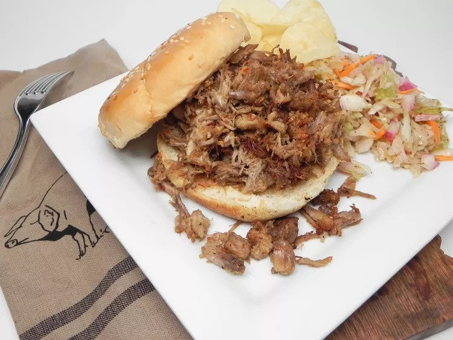

North Carolina Barbeque
Recipe

I just love vinegar-based barbeque. I looked high and low for an easy recipe for North Carolina barbeque;
this is it! Be warned; your friends will want the recipe.
Eat it with a fork or on rolls with coleslaw.
ingredients
- 1 (5 pound) pork butt roast
- 2 cups white vinegar
- 1 cup butter, melted
- 2 tablespoons salt
- 2 tablespoons lemon juice
- 2 tablespoons crushed red pepper flakes
- 1 tablespoon hot sauce
- 1 tablespoon ground black pepper
- 2 tablespoons white sugar
steps
- Trim the fat from the roast; place in slow cooker and cook on Low overnight, at least 8 hours.
- To make the sauce, whisk together the vinegar, melted butter,
salt, lemon juice, crushed red pepper, hot sauce, black pepper, and sugar in a bowl.
- Carefully remove the roast to a cutting board. Pull the meat from the bone with a fork.
Return the pork to the slow cooker.
Pour the sauce over the pulled pork. Simmer for 1 hour more.